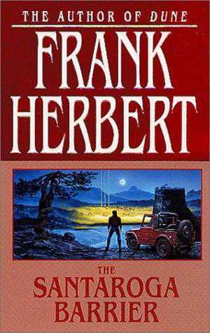

15 auteurs en 15 minutes
 Depuis hier après-midi,
j’oscille entre 39 et 40 de fièvre, encore ma sinusite chronique
(au passage si quelqu’un a un remède miracle je suis preneur), je
n’ai ni la force de lire, ni d’écrire. C’est peut-être l’occasion
de répondre au petit jeu que me propose Nicolas Ancion.
Depuis hier après-midi,
j’oscille entre 39 et 40 de fièvre, encore ma sinusite chronique
(au passage si quelqu’un a un remède miracle je suis preneur), je
n’ai ni la force de lire, ni d’écrire. C’est peut-être l’occasion
de répondre au petit jeu que me propose Nicolas Ancion.
Ne prenez pas trop de temps pour y penser. Quinze auteurs (incluant les poètes), qui vous ont influencé et que vous garderez toujours dans votre cœur. Listez les 15 premiers dont vous vous souvenez en moins de 15 minutes.
J’ajoute le livre qui m’a le plus marqué et je les range par date de publication…
- Jean-Jacques Rousseau, Les confessions, 1770.
- Johann Wolfgang von Goethe, Les Années d'apprentissage de Wilhelm Meister, 1796.
- Gustave Flaubert, L’éducation sentimentale, 1869.
- Hermann Hesse, Siddhartha, 1922.
- Marcel Proust, La recherche du temps perdu, 1922.
- H P Lovecratf, L’affaire Charles Dexter Ward, 1928.
- A E Van Vogt, Le monde des ?, 1945.
- Clifford D Simak, Au carrefour des étoiles, 1963.
- Nicolas Bouvier, L’usage du monde, 1963.
- Witold Gombrowicz, Journal, 1966.
- Frank
Herbert, La barrière Santaroga, 1968.

- Claude Simon, Triptyque, 1973.
- Georges Perec, Tentative d’épuisement d’un lieu parisien, 1975.
- Pascal Quignard, La frontière, 1992.
- Jon Krakauer, Into thin air, 1996.
Suite | 2010 | Sommaire | Texte publié vendredi 12 novembre 2010